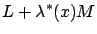
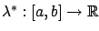
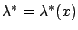
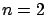
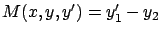

We now suppose that instead of the integral constraint (2.45) we have an equality constraint which must hold pointwise:
Let  be a test curve. It turns out that the first-order
necessary condition for
optimality in this case is similar to that for integral constraints, but
the Lagrange multiplier is now a
function of
be a test curve. It turns out that the first-order
necessary condition for
optimality in this case is similar to that for integral constraints, but
the Lagrange multiplier is now a
function of  . In other words, the Euler-Lagrange equation must
hold for the augmented Lagrangian
. In other words, the Euler-Lagrange equation must
hold for the augmented Lagrangian

where

is some function. As in Section 2.5.1, we need a technical assumption to rule out degenerate cases. Here we need to assume that there are at least two degrees of freedom and that everywhere along the curve we have
We will not give a proof of the above result, and instead
limit ourselves to an intuitive explanation.
The integral constraint (2.45) is global, in the sense that it
applies to the entire curve. In contrast, the non-integral
constraint (2.52) is local, i.e., applies to each point on the
curve. Locally around each point, there is no difference between
the two. This suggests that for each  there should exist a Lagrange
multiplier, and these can be pieced together
to give the desired function
there should exist a Lagrange
multiplier, and these can be pieced together
to give the desired function

. Another way to see the correspondence between the two problems is to follow Lagrange's idea of considering an augmented cost functional which coincides with the original one for curves satisfying the constraint. For integral constraints this was accomplished by (2.51), while here we can consider the minimization of
What if we want to solve the
constraint (2.52) for  as a function of
as a function of
 and
and  ? In general, we have fewer constraints than the
dimension of
? In general, we have fewer constraints than the
dimension of  , i.e., the system of equations
is under-determined. This means that we
will have some free parameters; denoting by
, i.e., the system of equations
is under-determined. This means that we
will have some free parameters; denoting by  the vector
of these parameters, we can write the solution in the form
the vector
of these parameters, we can write the solution in the form
The reader hopefully recognizes this as a control system, in the disguise of a somewhat unfamiliar notation compared to (1.1). For example, if

(two degrees of freedom) and
, then we have